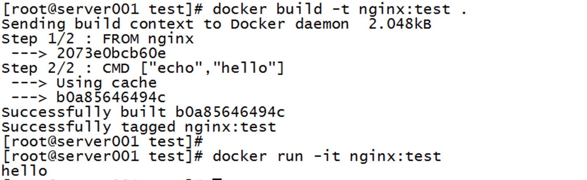
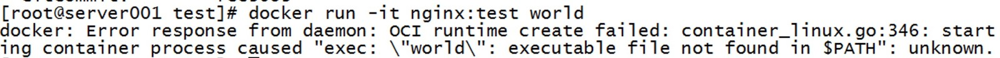
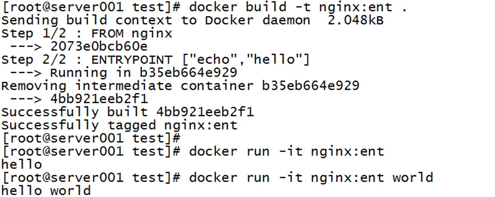
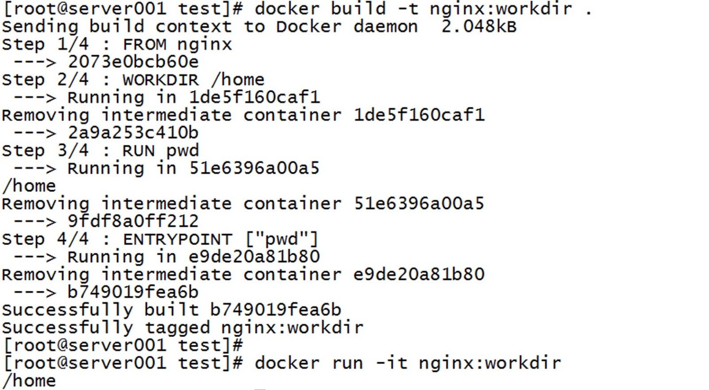

- 01.Jenkins的安装配置与日常维护.md.html
- 02.Jenkins强大的插件功能.md.html
- 03.Devops工具链.md.html
- 04.初探Jenkins CD实践.md.html
- 05.Jenkins常用项目配置参数.md.html
- 06.Jenkins部署之Docker要点.md.html
- 07.Jenkins集成之Ansible要点.md.html
- 08.Jenkins集成Ansible持续部署服务到Docker容器.md.html
- 09.实现自动化引擎之Jenkins Pipeline声明式语法.md.html
- 10.实现自动化引擎之Jenkins Pipeline脚本式语法.md.html
- 11.Pipeline语法进行持续交付与基础实践.md.html
- 12.Jenkins Docker Pipeline插件动态生成Slave节点语法剖析.md.html
- 13.使用 Docker Pipeline插件动态生成Jenkins Slave 实践.md.html
- 14.搞定不同环境下的Jenkins与Kubernetes集群连接配置.md.html
- 15.Jenkins Kubernetes Plugin介绍与语法详解.md.html
- 16.使用Kubernetes编排Jenkins Slave节点持续交付项目.md.html
- 17.使用Kubernetes插件持续部署服务到Kubernetes集群.md.html
- 18.Ansible Plugin插件语法详解与持续部署服务到kubernetes集群.md.html
- 捐赠
06.Jenkins部署之Docker要点
docker 基础操作
在前面的实践章节介绍了将服务部署到容器中，有些读者对于docker可能并不熟悉，而且在后面的文章中，基本上所有的实践案例都是围绕着容器展开的，所以介绍后面的实践内容之前有必要先学习一下docker的基础操作。当然，如果你对docker的操作比较熟悉，也可以略过此节的内容。
Docker的三大核心组件：镜像、容器和镜像仓库。使用docker服务的操作基本上也是围绕这三大核心组件开展的，在前面的”基础工具安装“章节对于企业级的镜像仓库已经做了介绍，本节主要来介绍一下镜像操作和容器操作。如果你时一个docker老司机，那么你也可以略过此章节。
镜像基本操作
本小节主要涉及到的内容如下：
- 获取镜像
- 列出镜像
- 删除镜像
- 构建镜像
获取镜像
从Docker 官方Registry获取镜像的命令是docker pull。其命令格式为：
docker pull [option] [Docker Registry地址]/<仓库名>:<标签>
具体的参数选项可以通过docker pull --help命令查看，这里说一下镜像地址名称的格式。
Docker Registry地址的格式一般是
<域名/IP>[:端口号]
默认地址是Docker Hub的地址。
<仓库名>：如上面语法所示，这里的仓库名是两段式名称，即
<用户名>/<镜像名>
对于 Docker Hub，如果不给出用户名，则默认为library，也就是官方镜像。比如：
$ docker pull ubuntu:14.04
14.04:Pulling from library/ubuntu
......
Digest:sha256:147913621d9cdea08853f6ba9116c2e27a3ceffecf3b492983ae97c3d643fbbe
Status:Downloaded newer image for ubuntu:14.04
上面的镜像地址没有给出，默认使用docker hub下library用户下镜像，获取官方library/ubuntu仓库中标签为14.04的镜像。
如果从其他镜像仓库获取，例如：阿里云
docker pull registry.cn-beijing.aliyuncs.com/daimler-jenkins/jenkins-slave-java
如果想要查询官方的某个镜像怎么办？使用
docker search <关键字>
命令可以根据关键字搜索镜像，比如我要搜索jenkins镜像，就会列出存在的jenkins镜像，如下所示
[root@glusterfs-160 ~]# docker search jenkins
NAME DESCRIPTION STARS OFFICIAL AUTOMATED
jenkins Official Jenkins Docker image 4642 [OK]
jenkins/jenkins The leading open source automation server 1904
jenkinsci/blueocean https://jenkins.io/projects/blueocean 490
......
也可以通过在浏览器访问hub.docker.com官方界面通过输入关键字搜素想要获取的镜像，这里就不在演示了，有兴趣大家可以试一下
列出镜像
要想列出已经下载下来的镜像，可以使用 docker images 命令。
$ docker images
REPOSITORYTAG IMAGE ID CREATED SIZE
redis latest 5f515359c7f8 5 days ago 183MB
nginx latest 05a60462f8ba 5 days ago 181MB
上面列表包含了仓库名、标签、镜像ID、创建时间以及所占用的空间。镜像ID是镜像的唯一标识，一个镜像可以对应多个标签。
如果仔细观察，会注意到，这里标识的所占用空间和在Docker Hub上看到的镜像大小不同。
比如openjdk:latest 镜像大小，拉取下来为495 MB，但是在 Docker Hub显示的却是 244 MB。这是因为Docker Hub中显示的体积是压缩后的体积。在镜像下载和上传过程中镜像是保持着压缩状态的，因此 Docker Hub 所显示的大小是网络传输中更关心的流量大小。
而 docker images命令显示的是镜像下载到本地后，展开的大小，准确说，是展开后的各层所占空间的总和，因为镜像到本地后，查看空间的时候，更关心的是本地磁盘空间占用的大小。
另外一个需要注意的问题是，docker images 列表中的镜像体积总和并非是所有镜像实际硬盘消耗。由于 Docker 镜像是多层存储结构，并且可以继承、复用，因此不同镜像可能会因为使用相同的基础镜像，从而拥有共同的层。由于 Docker 使用 Union FS，相同的层只需要保存一份即可，因此实际镜像硬盘占用空间很可能要比这个列表镜像大小的总和要小的多。
虚悬镜像
如果在images列出的这中镜像既没有仓库名，也没有标签，并且均为”<none>“的镜像，比如
<none> <none> 00285df0df87 5 days ago 342 MB
这类镜像为虚悬镜像，虚悬镜像的产生大多是因为镜像仓库里的镜像更新并重新拉取后，旧镜像的标签转移到新镜像上来导致的；另一种情况是通过build操作构建镜像时，构建失败导致的。一般来说，虚悬镜像已经失去了存在的价值，是可以随意删除的。
可通过如下命令列出所有的虚悬镜像
$ docker images -f dangling=true
可以用下面的命令删除
$ docker rmi $(docker images -q -f dangling=true)
中间层镜像
为了加速镜像构建、重复利用资源，Docker会利用中间层镜像。所以在使用一段时间后，可能会看到一些依赖的中间层镜像。
与之前的虚悬镜像不同，有些无标签的镜像很多都是中间层镜像，是其它镜像所依赖的镜像。这些无标签镜像不应该删除，否则会导致上层镜像因为依赖丢失而出错。实际上，如果这些镜像在使用中，默认也是不能删除的。这些镜像也没必要删除，因为相同的层只会存一遍，而这些镜像是别的镜像的依赖，因此并不会因为它们被列出来而多存了一份，无论如何你也会需要它们。
只要删除那些依赖它们的镜像后，这些依赖的中间层镜像也会被连带删除。
默认的docker images列表中只会显示顶层镜像，如果希望显示包括中间层镜像在内的所有镜像的话，需要加-a参数。
$ docker images -a
列出部分镜像
不加任何参数的情况下，docker images命令会列出所有顶级镜像，但是有时候我们只希望列出部分镜像。docker images命令有多个参数可以帮助做到这个事情。
#根据仓库名列出镜像
$ docker images Ubuntu
#列出特定的某个镜像，也就是说指定仓库名和标签
$ docker images ubuntu:16.04
根据指定条件列出镜像
比如根据REPOSITORY和Tag列出匹配的镜像
$ docker images --filter=reference='busy*:*libc'
REPOSITORY TAG IMAGE ID CREATED SIZE
busybox uclibc e02e811dd08f 5 weeks ago 1.09 MB
busybox glibc 21c16b6787c6 5 weeks ago 4.19 MB
也可以使用多个filter
$ docker images --filter=reference='busy*:uclibc' --filter=reference='busy*:glibc'
REPOSITORY TAG IMAGE ID CREATED SIZE
busybox uclibc e02e811dd08f 5 weeks ago 1.09 MB
busybox glibc 21c16b6787c6 5 weeks ago 4.19 MB
--filter支持的关键字如下
- dangling (
boolean - true or false)，列出虚悬镜像 - label (
label=orlabel==) 根据指定lable列出镜像 - before (
[:],or) - 过滤出在给定的image id之前创建的镜像 - since (
[:],or) - 过滤出引用此image id创建的镜像 - reference 根据给出的匹配条件过滤出镜像
以特定格式显示
默认情况下，docker images 会输出一个完整的表格，但是我们并非所有时候都会需要这些内容。比如，刚才删除虚悬镜像的时候，我们需要利用docker images 把所有的虚悬镜像的ID列出来，然后才可以交给docker rmi命令作为参数来删除指定的这些镜像，这个时候可以使用-q 参数，用于列出镜像的id
$ docker images -q
5f515359c7f8
如果希望自己组织列，获取指定的解析结果，可以用Go的模板语法。
比如，下面的命令会直接列出镜像结果，并且只包含镜像ID和仓库名：
$ docker images --format "{{.ID}}:{{.Repository}}“
5f515359c7f8: redis
或者打算以表格等距显示，并且有标题行，和默认一样，不过自己定义列：
$ docker images --format "table{{.ID}}\t{{.Repository}}\t{{.Tag}}"
IMAGE ID REPOSITORY TAG
5f515359c7f8 redis latest
format支持如下关键字
.ID
Image ID
.Repository
镜像仓库名称
.Tag
镜像标签
.Digest
镜像 摘要
.CreatedSince
镜像创建后经过多长时间
.CreatedAt
镜像创建时间
.Size
镜像占用空间大小
删除镜像
如果要删除本地的镜像，可以使用docker image rm命令，其格式为：
$ docker image rm [选项] <镜像1> [<镜像2>...]
或者使用
$ docker rmi [OPTIONS] IMAGE [IMAGE...]
可以通过 docker rmi --help 查看更多帮助
#用docker images 命令来配合
可以使用 docker images -q 来配合使用docker rmi，这样可以成批的删除希望删除的镜像。删除虚悬镜像的指令是：
$ docker rmi $(docker images -q -f dangling=true)
#比如，我们需要删除所有仓库名为redis的镜像：
$ docker rmi $(docker images -q redis)
#默认情况下，正在运行使用的镜像是不能被删除的，需要先停止容器在进行删除操作，也可以使用 -f 参数强制删除
构建镜像
使用 Dockerfile 定制镜像
要构建镜像，就要制定构建的指令，而Dockerfile就是包含一些自定义的指令和格式、用来构建镜像的文本文件。
Dockerfile 提供了一系列统一的资源配置语法，用户可以根据这些语法命令自定义配置，构建自定义镜像。
在学习构建镜像之前，先学习一下Dockerfile的一些基本介绍以及基本指令
此次Dockerfile主要介绍如下内容:
- Docker build 构建过程
- Dockerfile 基础指令
- 使用 Dockerfile 定制镜像
构建过程大致如下：
Docker Client 端收到用户指令，解析命令行参数并发送给Docker Server，Docker Server 端收到http请求后：
- 首先创建一个临时目录，将context指定的文件系统解压到该目录下
- 读取并解析Dockerfile
- 根据解析出的Dockerfile遍历其中所有指令，并分发到不同的模块去执行
- 解析器指令（parser）为每一个指令创建一个临时容器，并在里面执行当前命令，然后通过commit，使此容器生成一个镜像层。所有层的集合就是build后的结果。最后一次commit的镜像id就会作为此镜像的最终Id
Dockerfile 基础指令
COPY
复制文件，格式如下
COPY <源路径>...<目标路径>COPY ["<源路径1>",..."<目标路径>"]
COPY 指令有两种格式，一种类似于命令行，一种类似于函数调用。
COPY 指令将从构建上下文目录中<源路径> 的文件/目录复制到新的一层的镜像内的<目标路径> 位置。
比如：
COPY package.json /usr/src/app/
<源路径> 可以是多个，甚至可以是通配符，其通配符规则要满足Go的 filepath.Match规则，如：
COPY hom* /mydir/COPY hom?.txt /mydir/
说明：
- <目标路径> 可以是容器内的绝对路径，也可以是相对于工作目录的相对路径（工作目录可以用WORKDIR指令来指定）。
- <目标路径>不需要事先创建，如果目录不存在会在复制文件前先行创建缺失目录。
此外，还需要注意一点，使用COPY指令，源文件的各种元数据都会保留。比如读、写、执行权限、文件变更时间等。这个特性对于镜像定制很有用。特别是构建相关文件都在使用Git进行管理的时候。
ADD 高级的复制文件
ADD 指令和COPY的格式和性质基本一致。但是在COPY基础上增加了一些功能
比如 <源路径> 可以是一个URL，这种情况下，Docker引擎会试图去下载这个链接的文件放到<目标路径> 下；下载后的文件权限自动设置为600，如果这并不是想要的权限，那么还需要增加额外的一层RUN进行权限调整。
另外，如果下载的是个压缩包，需要解压缩，也一样还需要额外的一层RUN指令进行解压缩。所以不如直接使用RUN指令，然后使用wget或者curl工具下载，处理权限、解压缩、然后清理无用文件更合理。因此，这个功能其实并不实用，而且不推荐使用。
如果 <源路径> 为一个tar压缩文件的话，压缩格式为gzip，bzip2以及xz的情况下，ADD指令将会自动解压缩这个压缩文件到<目标路径> 去。
在某些情况下，这个自动解压缩的功能非常有用，比如官方镜像ubuntu中：
FROM scratch
ADD ubuntu-xenial-core-cloudimg-amd64-root.tar.gz /...
但在某些情况下，如果我们真的是希望复制个压缩文件进去，而不解压缩，这时就不可以使用ADD命令了。最适合使用ADD的场合，就是所提及的需要自动解压缩的场合。
因此在COPY和ADD指令中选择的时候，可以遵循这样的原则，所有的文件复制均使用COPY指令，仅在需要自动解压缩的场合使用ADD。
CMD 容器启动命令
Docker 容器实质就是进程。既然是进程，那么在启动容器的时候，需要指定所运行的程序及参数。CMD 指令就是用于指定默认的容器主进程的启动命令的。
在指令格式上，一般推荐使用exec格式，这类格式在解析时会被解析为JSON数组，因此一定要使用双引号”，而不要使用单引号。
提到CMD就不得不提容器中应用在前台执行和后台执行的问题。
Docker 不是虚拟机，容器中的应用都应该以前台执行，而不是像虚拟机、物理机里面那样，用upstart/systemd去启动后台服务，容器内没有后台服务的概念。
CMD service nginx start 会被理解为 CMD [ "sh","-c", "service nginx start"]，因此主进程实际上是sh。那么当 service nginx start命令结束后，sh也就结束了，sh作为主进程退出了，自然就会令容器退出。
正确的做法是直接执行nginx可执行文件，并且要求以前台形式运行。比如：
CMD ["nginx","-g", "daemon off"]
ENTRYPOINT
ENTRYPOINT 的格式和RUN指令格式一样，分为exec格式和 shell 格式。ENTRYPOINT 的目的和CMD一样，都是在指定容器启动程序及参数。
当指定了ENTRYPOINT 后，CMD 的含义就发生了改变，不再是直接的运行其命令，而是将 CMD 的内容作为参数传给 ENTRYPOINT指令，即实际执行时，将变为：
<ENTRYPOINT> "<CMD>"
说通俗了就是相当于在容器内部（或者dockerfile）CMD执行的命令列表里加上了新传入的参数，并且执行
示例如下
首先看一下CMD命令
$ cat Dockerfile
FROM nginx
CMD ["echo","hello"]
$ docker build -t nginx:test .
$ docker run -it nginx:test
效果如下所示：

说明
- 重新构建的镜像加入了CMD命令（此命令会覆盖之前存在镜像里的nginx daeomon off命令），所以运行时会打印出新加入的命令，并且运行后会自动关闭容器（因为命令执行完毕了）
在运行一个容器，并且传入命令
docker run -it nginx:test world

说明
- 新传入的命令 world 会覆盖cmd里的
echo hello命令，由于此命令不存在，所以会报错
修改Dockerfile，CMD改成ENTRYPOINT
$ cat dockerfile
FROM nginx
ENTRYPOINT ["echo","hello"]
$ docker build -t nginx:ent .
$ docker run -it nginx:ent
$ docker run -it nginx:ent world

从执行结果可以看到world 被当做参数传去了
WORKDIR 指定工作目录
格式：
WORKDIR <工作目录路径>
使用WORKDIR指令可以来指定工作目录（或者称为当前目录），以后各层的当前目录就被改为指定的目录，如该目录不存在，WORKDIR 会帮你建立目录。
在 Shell中，连续两行是同一个进程执行环境，因此前一个命令修改的内存状态，会直接影响后一个命令；而在Dockerfile中，这两行RUN命令的执行环境根本不同，是两个完全不同的容器。
因此如果需要改变以后各层的工作目录的位置，那么应该使用WORKDIR指令。
示例
FROM nginx
WORKDIR /home
RUN pwd
ENTRYPOINT ["pwd"]
效果如下所示：

ENV 设置环境变量
格式：
ENV <key> <value>
ENV <key1>=<value1> <key2>=<value2>...
这个指令是设置环境变量，无论是后面的其它指令，如RUN，还是运行时的应用，都可以直接使用这里定义的环境变量。
ENV NODE_VERSION 7.2.0
RUN touch $NODE_VERSION-txt
CMD ["ls"]
下列指令可以支持环境变量展开：
ADD、COPY、ENV、EXPOSE、LABEL、USER、WORKDIR、VOLUME、STOPSIGNAL、ONBUILD。
ARG 构建参数
格式：
ARG <参数名>[=<默认值>]
构建参数和ENV的效果一样，都是设置环境变量。所不同的是，ARG所设置的构建环境的环境变量，在将来容器运行时是不会存在这些环境变量的。但是不要因此就使用ARG 保存密码之类的信息，因为docker history 还是可以看到所有值的。
Dockerfile中的 ARG 指令是定义参数名称，以及定义其默认值。该默认值可以在构建命令 docker build 中用 --build-arg <参数名>=<值> 来覆盖。
在1.13 之前的版本，要求--build-arg中的参数名，必须在Dockerfile中用ARG定义过才能用。换句话说，就是--build-arg指定的参数，必须在Dockerfile中使用了。如果对应参数没有被使用，则会报错退出构建。
从1.13 开始，这种严格的限制被放开，不再报错退出，而是显示警告信息，并继续构建。这对于使用CI系统，用同样的构建流程构建不同的Dockerfile的时候比较有帮助，避免构建命令必须根据每个Dockerfile的内容修改。
如下示例：
$ cat Dockerfile
ARG full_name
ENV JAVA_APP_JAR $full_name
ENV AB_OFF true
ADD$JAVA_APP_JAR /deployments/
#构建
$ docker build -t image_name --build-arg full_name=full_name .
EXPOSE 声明端口
格式：
EXPOSE <端口1> [<端口2>...]
EXPOSE指令是声明运行时容器提供服务端口，这只是一个声明，在运行时并不会因为这个声明应用就会开启这个端口的服务。
在Dockerfile中写入这样的声明有两个好处：
- 帮助镜像使用者理解这个镜像服务的守护端口，以方便配置映射；
- 在运行时使用随机端口映射时，也就是
docker run -P时，会自动随机映射 EXPOSE的端口。
要将EXPOSE和在运行时使用 -p 宿主端口:容器端口 区分开来。-p，是映射宿主端口和容器端口。换句话说，就是将容器的对应端口服务公开给外界访问；而EXPOSE仅仅是声明容器打算使用什么端口而已，并不会自动在宿主进行端口映射。
VOLUME 定义匿名卷
格式：
VOLUME ["<路径1>","<路径2>"...]
VOLUME <路径>
VOLUME /data
这里的/data目录就会在运行时自动挂载为匿名卷，任何向/data 中写入的信息都不会记录进容器存储层，从而保证了容器存储层的无状态化。当然，运行时可以覆盖这个挂载设置，比如：
docker run -d -v /mydata:/data xxxx
在这行命令中，就使用了mydata这个命名卷挂载到了/data 这个位置，替代了Dockerfile中定义的匿名卷的挂载配置。
示例
$ cat dockerfile
FROM nginx
WORKDIR /home
RUN pwd
volume ["/data"]
$ docker build -t nginx:volume .
$ docker run -itd nginx:volume
通过docker inspect docker_id 可查看此volume 映射到本地的位置，创建一个文件，写入测试的内容，然后退出容器，可发现文件在本地还在
USER 指定当前用户
USER 指令和 WORKDIR 相似，都是改变环境状态并影响以后的层。WORKDIR 是改变工作目录，USER 则是改变之后层的执行RUN，CMD 以及ENTRYPOINT 这类命令的身份。
当然，和 WORKDIR 一样，USER 只是帮助你切换到指定用户而已，这个用户必须是事先建立好的，否则无法切换
RUN groupadd -r redis && useradd -r -g redisredis
USER redis
RUN ["redis-server"]
如果以root 执行的脚本，在执行期间希望改变身份，比如希望以某个已经建立好的用户来运行某个服务进程，不要使用su或者sudo，这些都需要比较麻烦的配置，而且在TTY 缺失的环境下经常出错。
# 建立redis用户，并使用gosu换另一个用户执行命令
RUN groupadd -r redis && useradd -r -g redis redis
# 设置CMD，并以另外的用户执行
CMD ["exec", "gosu","redis","redis-server"]
到此，常用的dockerfile的指令就介绍的差不多了，熟悉dockerfile的各个指令以后，可以帮助我们更加快速的编写dockerfile文件
使用 Dockerdile 定制镜像
了解了Dockerfile的常用指令后，编写好Dockerfile，就可以通过docker build命令构建镜像了。
首先看一下构建语法
$ docker build --help
$ docker build [OPTIONS] PATH | URL | -
PATH或URL指向的文件为context（上下文路径），此路径包含build过程中的Dockerfile文件以及其它需要构建到镜像中的资源文件。
使用Dockerfile 定制镜像，那一定是以一个镜像为基础，在其上进行定制。就像下面 redis镜像的容器，对其进行修改一样，基础镜像是必须指定的。而FROM就是指定基础镜像，因此一个Dockerfile中FROM是必备的指令，并且必须是第一条指令。
先看一个初学者示例（只做演示用，非最终版）：
$ cat Dockerfile
FROM debian:jessie
RUN apt-get update
RUN apt-get install -y gcclibc6-dev make
RUN wget -O redis.tar.gz "http://download.redis.io/releases/redis-3.2.5.tar.gz"
RUN mkdir -p /usr/src/redis
RUN tar -xzf redis.tar.gz -C /usr/src/redis--strip-components=1
RUN make -C /usr/src/redis
RUN make -C /usr/src/redis install
说明：
- FROM 指定一个基础镜像，必须存在
- RUN 指令用来执行命令行命令，最常用的指令之一
Dockerfile 中每一个指令都会建立一层，RUN也不例外。每一个RUN的行为，就和刚才我们手工建立镜像的过程一样：新建立一层，在其上执行这些命令，执行结束后，commit这一层的修改，构成新的镜像。
而上面的这种写法，创建了7层镜像。这是完全没有意义的，而且很多运行时不需要的东西，都被装进了镜像里，比如编译环境、更新的软件包等等。结果就是产生非常臃肿、非常多层的镜像，不仅仅增加了构建部署的时间，也很容易出错。 这是很多初学 Docker 的人常犯的一个错误。Union FS 是有最大层数限制的，比如 AUFS，曾经是最大不得超过 42 层，现在是不得超过 127 层。
所以，修改上面dockerfile 如下所示:
FROM debian:jessie
RUN apt-get update \
&& apt-get install -y gcclibc6-dev make \
&& wget -O redis.tar.gz "http://download.redis.io/releases/redis-3.2.5.tar.gz" \
&& mkdir -p /usr/src/redis \
&& tar -xzf redis.tar.gz -C /usr/src/redis--strip-components=1 \
&& make -C /usr/src/redis \
&& make -C /usr/src/redis install
另一点需要注意的是，Dockerfile的文件名并不要求必须Dockerfile。也可以使用-f参数指定其他Dockerfile名称，此时后面的工作目录需要指定Dockerfile的上下文目录。
比如，我的Dockerfile在/root/docker/目录下，此目录下还有一个aa.json文件，Dockerfile如下
FROM debian:jessie
RUN build Deps='gcc libc6-dev make wget'\
&& mkdir -p /usr/src/redis
COPY ./aa.json /usr/src/redis
那么构建的命令为
docker build -t redis:v1 -f /root/docker/Dockerfile /root/docker/
如果目录下有些东西确实不希望构建时传给Docker引擎，那么可以用.gitignore一样的语法写一个.dockerignore，该文件是用于剔除不需要作为上下文传递给Docker引擎的。
echo ".git" > .dockerignore
在Dockerfile文件所在目录根据上面的docker build命令进行镜像构建：
$ docker build -t redis:v3 .
说明:
- ”.” 表示当前目录（可以理解为Dockerfile目录），而dockerfile就在当前目录也是在指定的上下文的目录
有关镜像操作的内容就介绍到这里，下面看一下容器的操作
容器操作
本小节主要介绍以下内容：
- Docker命令分类
- 启动容器
- 后台运行容器
- 查看容器
- 进入容器
- 导入导出容器
- 删除容器
Docker 命令分类
在进行容器实操之前，先看看容器的一些命令分类
Docker 环境信息 info、version
容器生命周期管理 Create、exec、kill、pause、restart、rm、run、start、stop、unpause
镜像仓库命令 login、logout、pull、push、search
镜像管理 build、images、import、load、rmi、save、tag、commit
容器运维操作 attach、export、inspect、port、ps、rename、stats、top、wait、cp、diff、update
容器资源管理 volume、network
系统信息日志 events、history、logs #events打印容器的实时系统事件， history 打印出指定镜像的历史版本信息，logs打印容器中进程的运行日志
更多命令可参考官网
启动容器
启动容器有两种方式，一种是基于镜像新建一个容器并启动，另外一个是将在终止状态（stopped）的容器重新启动。
命令语法
$ docker run --help
Usage: docker run [OPTIONS] IMAGE [COMMAND] [ARG...]
新建并启动，所需要的命令主要为 docker run。例如，下面的命令输出一个 “Hello World”，之后终止容器。
$ docker run ubuntu:14.04 /bin/echo 'Hello world'
Hello world
注意：容器启动后只是输出 hello world，输出后容器关闭退出
下面的命令则启动一个 bash终端，允许用户进行交互。
$ sudo docker run -t -i -m 2G --cpu-shares 1536 ubuntu:14.04 /bin/bash
root@af8bae53bdd3:/#
其中：
- -t 参数让Docker分配一个伪终端（pseudo-tty）并绑定到容器的标准输入上
- -i 参数则让容器的标准输入保持打开。
- -c 参数用于给运行的容器分配cpu的shares值
- -m 参数用于限制为容器的内存信息，以 B、K、M、G 为单位
- -v 参数用于挂载一个volume，可以用多个-v参数同时挂载多个volume
- -p 参数用于将容器的端口暴露给宿主机端口 格式：hostport：containerport
需要注意的是，如果没加-d（后台运行）参数，从容器bash终端退出后，此容器会终止运行
启动和终止容器
可以使用 docker start/stop/restart 命令，直接将一个已经存在的容器启动/关闭/重启。容器的核心为所执行的应用程序，所需要的资源都是应用程序运行所必需的。除此之外，并没有其它的资源。可以在伪终端中利用ps或top命令来查看进程信息。
$ docker start/stop/restart <container_Id/containerName>
后台运行容器
更多的时候，需要让Docker在后台运行而不是直接把执行命令的结果输出在当前宿主机下。可以通过添加 -d 参数来实现。
注意：
容器是否会长久运行，是和docker run指定的命令有关，和 -d 参数无关。docker 容器后台运行必须加 -it参数，使用-d参数启动后会返回一个唯一的 id，也可以通过 docker ps 命令来查看容器信息。
要获取容器的输出信息，可以通过如下命令获取。
docker logs -f [container ID or container NAMES]
终止后台运行的容器
可以使用docker container stop来终止一个运行中的容器，当Docker容器中指定的应用结束时，容器也自动终止。 只启动了一个终端的容器，用户通过 exit 命令或 Ctrl+d 来退出终端时，所创建的容器立刻终止。
终止状态的容器可以用docker container ls -a或者docker ps -a 命令看到。
例如：
$ sudo docker ps -a
CONTAINER ID IMAGE COMMAND CREATED STATUS PORTS NAMES
ba267838cc1b ubuntu:14.04 "/bin/bash" 30 minutes ago Exited (0) About a minute ago trusting_newton
98e5efa7d997 training/webapp:latest "python app.py" About an hour ago Exited (0) 34 minutes ago backstabbing_pike
处于终止状态的容器，可以通过docker start命令来重新启动(如果不是意外终止的容器)。docker restart命令会将一个运行态的容器终止，然后再重新启动它。
查看容器
容器启动了，那么该如何查看呢？通过docker ps命令，docker ps命令不加参数情况下用来列出正在运行的容器。
首先看一下ps命令的参数
$ docker ps -h
Flag shorthand -h has been deprecated, please use --help
Usage: docker ps [OPTIONS]
List containers
Options:
-a, --all Show all containers (default shows just running)
-f, --filter filter Filter output based on conditions provided
--format string Pretty-print containers using a Go template
-n, --last int Show n last created containers (includes all states) (default -1)
-l, --latest Show the latest created container (includes all states)
--no-trunc Don't truncate output
-q, --quiet 只显示容器id
-s, --size Display total file sizes
-a 参数用来显示所有的容器，无论状态是运行的还是退出的
$ docker ps -a
CONTAINER ID IMAGE COMMAND CREATED STATUS PORTS NAMES
336dded76f59 gitlab/gitlab-ee "/assets/wrapper" 2 months ago Up 2 months (healthy) 0.0.0.0:80->80/tcp, 0.0.0.0:2222->22/tcp, 0.0.0.0:2443->443/tcp gitlab
854e0ae79353 goharbor/harbor-jobservice:v1.9.1 "/harbor/harbor_jobs…" 4 months ago Exited (128) 4 months ago harbor-jobservice
.....
-f 参数用来根据关键字过滤出想要列出的容器，比如
根据name获取指定的容器
$ docker ps --filter "name=nostalgic"
CONTAINER ID IMAGE COMMAND CREATED STATUS PORTS NAMES
715ebfcee040 busybox "top" 3 seconds ago Up 1 second i_am_nostalgic
9b6247364a03 busybox "top" 7 minutes ago Up 7 minutes nostalgic_stallman
根据指定退出码列出容器
$ docker ps -a --filter 'exited=0'
CONTAINER ID IMAGE COMMAND CREATED STATUS PORTS NAMES
ea09c3c82f6e registry:latest /srv/run.sh 2 weeks ago Exited (0) 2 weeks ago 127.0.0.1:5000->5000/tcp desperate_leakey
$ docker ps -a --filter 'exited=137'
CONTAINER ID IMAGE COMMAND CREATED STATUS PORTS NAMES
b3e1c0ed5bfe ubuntu:latest "sleep 1000" 12 seconds ago Exited (137) 5 seconds ago grave_kowalevski
根据容器状态列出容器（status）
可选参数有 created, restarting, running, removing, paused, exited and dead.
$ docker ps --filter status=running
CONTAINER ID IMAGE COMMAND CREATED STATUS PORTS NAMES
715ebfcee040 busybox "top" 16 minutes ago Up 16 minutes i_am_nostalgic
$ docker ps --filter status=paused
CONTAINER ID IMAGE COMMAND CREATED STATUS PORTS NAMES
673394ef1d4c busybox "top" About an hour ago Up About an hour (Paused)
使用-f参数还可以使用–format关键字，将获取到的内容格式化或者获取想要的指定的容器信息，
例如要获取容器的容器id和容器名称
$ docker ps -a --filter 'exited=0' --format "table {{.ID}}\t{{.Names}}"
CONTAINER ID NAMES
0f15dba71e5c runner-Zm2_mVvw-project-2-concurrent-0-cache-c33bcaa1fd2c77edfc3893b41966cea8
5e3cff545d1f runner-Zm2_mVvw-project-2-concurrent-0-cache-3c3f060a0374fc8bc39395164f415a70
format参数支持的关键字如下
.ID
Container ID
.Image
Image ID
.Command
command 命令
.CreatedAt
创建时间
.RunningFor
运行时间
.Ports
expose的端口
.Status
容器状态
.Size
容器占用的disk大小
.Names
容器名称
.Label
特殊的容器标签
有关容器的查看操作就简单介绍到这里
进入容器
在使用-d参数时，容器启动后会进入后台。某些时候需要进入容器进行操作，有很多种方法，包括使用docker attach/exec 命令或 nsenter 工具等。
exec 命令
sudo docker exec -it 775c7c9ee1e1 /bin/bash
更简单的，下载 .bashrc_docker，并将内容放到 .bashrc 中
$ cat .bashrc_docker
alias docker-pid="sudo docker inspect --format '{{.State.Pid}}'"
alias docker-ip="sudo docker inspect --format '{{ .NetworkSettings.IPAddress }}'"
#the implementation refs from https://github.com/jpetazzo/nsenter/blob/master/docker-enter
function docker-enter() {
#if [ -e $(dirname "$0")/nsenter ]; then
#Change for centos bash running
if [ -e $(dirname '$0')/nsenter ]; then
# with boot2docker, nsenter is not in the PATH but it is in the same folder
NSENTER=$(dirname "$0")/nsenter
else
# if nsenter has already been installed with path notified, here will be clarified
NSENTER=$(which nsenter)
#NSENTER=nsenter
fi
[ -z "$NSENTER" ] && echo "WARN Cannot find nsenter" && return
if [ -z "$1" ]; then
echo "Usage: `basename "$0"` CONTAINER [COMMAND [ARG]...]"
echo ""
echo "Enters the Docker CONTAINER and executes the specified COMMAND."
echo "If COMMAND is not specified, runs an interactive shell in CONTAINER."
else
PID=$(sudo docker inspect --format "{{.State.Pid}}" "$1")
if [ -z "$PID" ]; then
echo "WARN Cannot find the given container"
return
fi
shift
OPTS="--target $PID --mount --uts --ipc --net --pid"
if [ -z "$1" ]; then
# No command given.
# Use su to clear all host environment variables except for TERM,
# initialize the environment variables HOME, SHELL, USER, LOGNAME, PATH,
# and start a login shell.
#sudo $NSENTER "$OPTS" su - root
sudo $NSENTER --target $PID --mount --uts --ipc --net --pid su - root
else
# Use env to clear all host environment variables.
sudo $NSENTER --target $PID --mount --uts --ipc --net --pid env -i $@
fi
fi
}
# 将以上内容放到 .bashrc文件下
$ source ~/.bashrc
这个文件中定义了很多方便使用Docker的命令，例如docker-pid可以获取某个容器的PID；而docker-enter可以进入容器或直接在容器内执行命令。
$ docker-enter c0c00b21f8f8
root@c0c00b21f8f8:~# ls
root@c0c00b21f8f8:~# pwd
/root
root@c0c00b21f8f8:~# exit
logout
$ docker-pid c0c00b21f8f8
11975
删除容器
可以使用 docker rm 来删除一个处于终止状态的容器。 例如
$sudo docker rm trusting_newton(<container_name>)
trusting_newton
如果要删除一个运行中的容器，可以添加 -f 参数。Docker 会发送 SIGKILL 信号给容器。
清理所有处于终止状态的容器
用 docker ps -a 命令可以查看所有已经创建的包括终止状态的容器，如果数量太多要一个个删除可能会很麻烦，用 docker rm $(docker ps -a -q) 可以全部清理掉。
注意：这个命令其实会试图删除所有的包括还在运行中的容器，不过就像上面提过的 docker rm 默认并不会删除运行中的容器。
删除所有终止的容器
$ docker container prune #删除所有停止的容器，
-f 强制删除， --filter "until=24h" 删除停止超过24小时的容器
有关docker容器的内容就简单介绍到这里
© 2019 - 2023 Liangliang Lee. Powered by gin and hexo-theme-book.